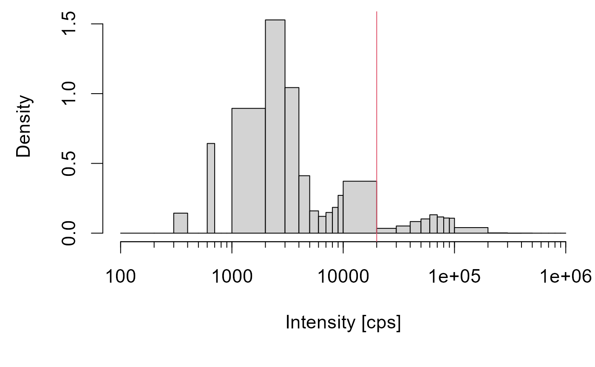
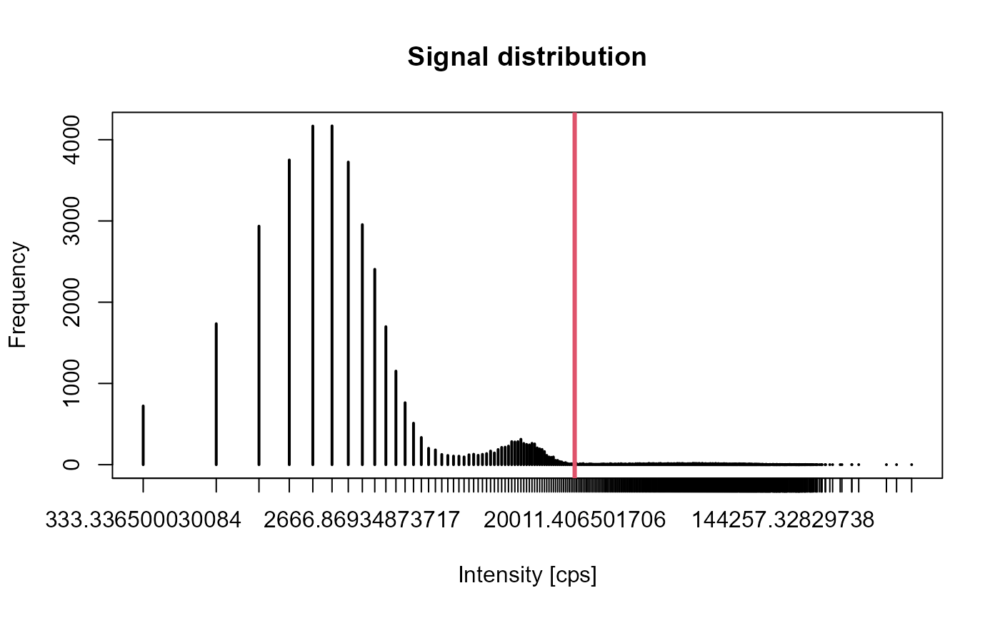

Plots the signal distribution of a single particle-ICP-MS measurement.
Usage
plot_signal_distribution(x, LFD = 20000, style = c("hist", "counts"))Details
Determination of the intensity limit for the differentiation between particle and background signals.
Examples
sp_data <- ETVapp::ETVapp_testdata[["oIDMS"]][["sp_particle"]][[1]]
plot_signal_distribution(x = sp_data[,2])

plot_signal_distribution(x = sp_data[,2], style="counts")
#> Warning: 1 x value <= 0 omitted from logarithmic plot
